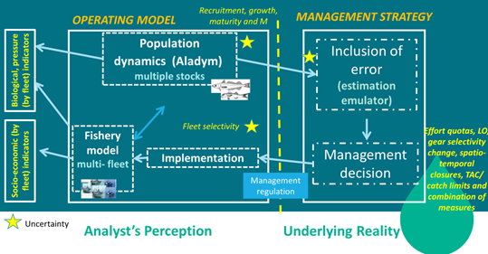
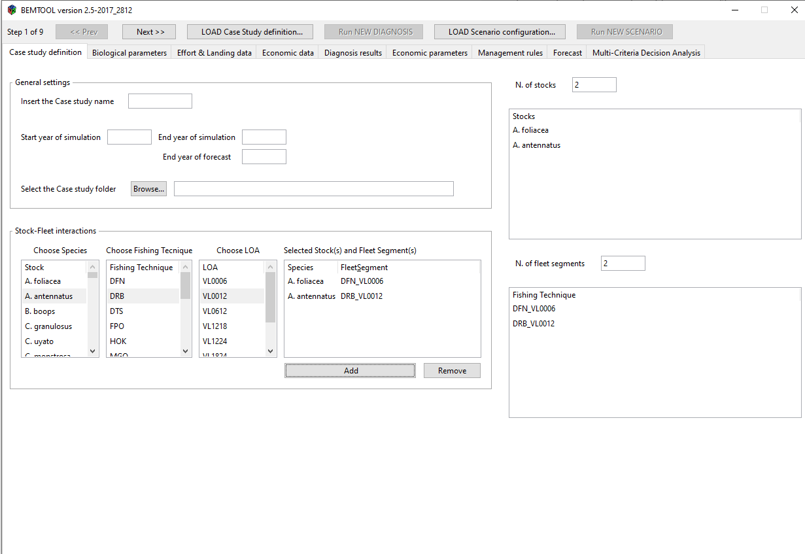
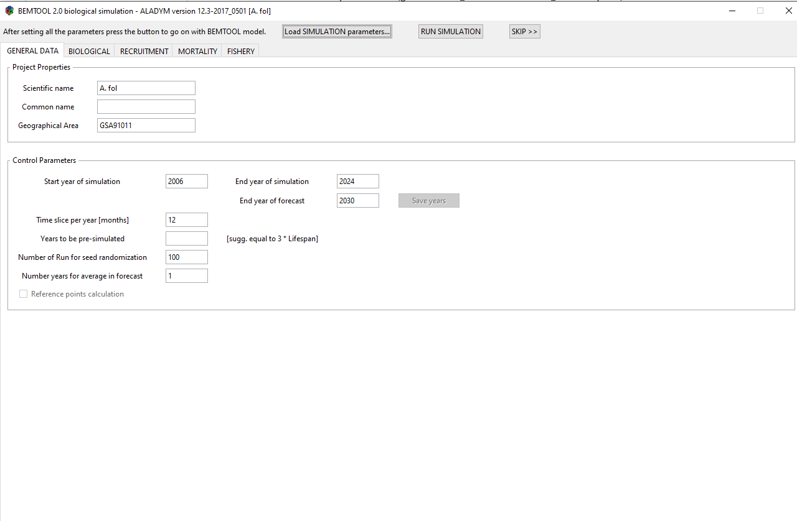
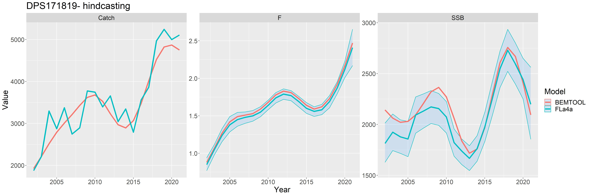
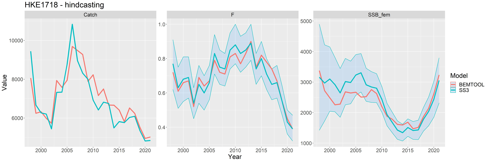
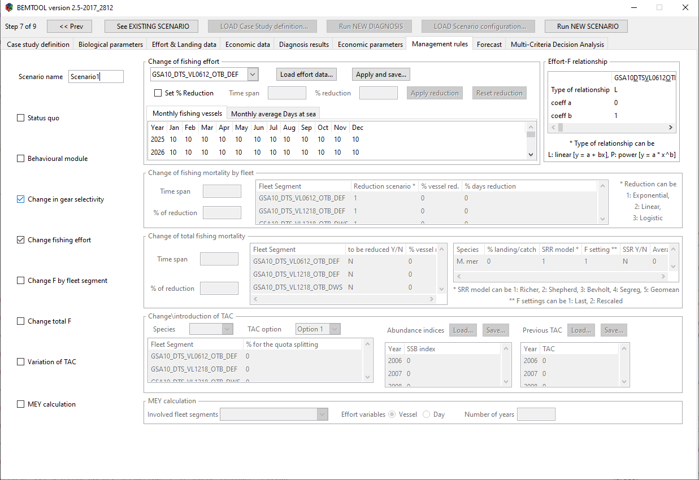
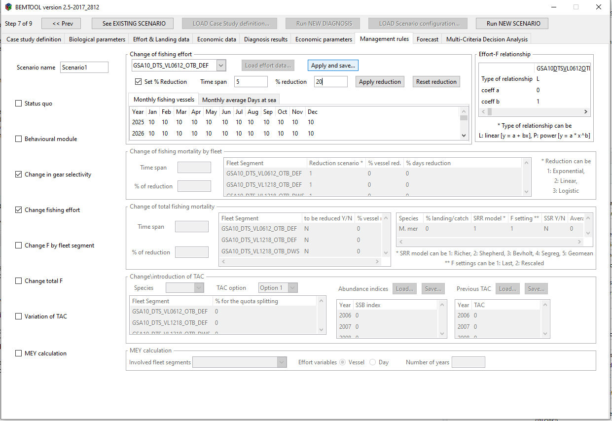
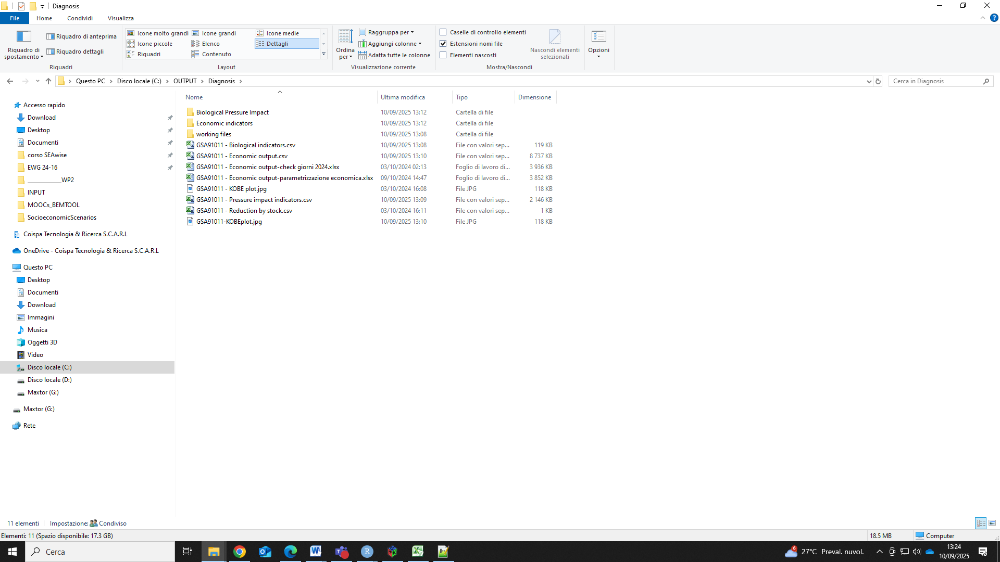
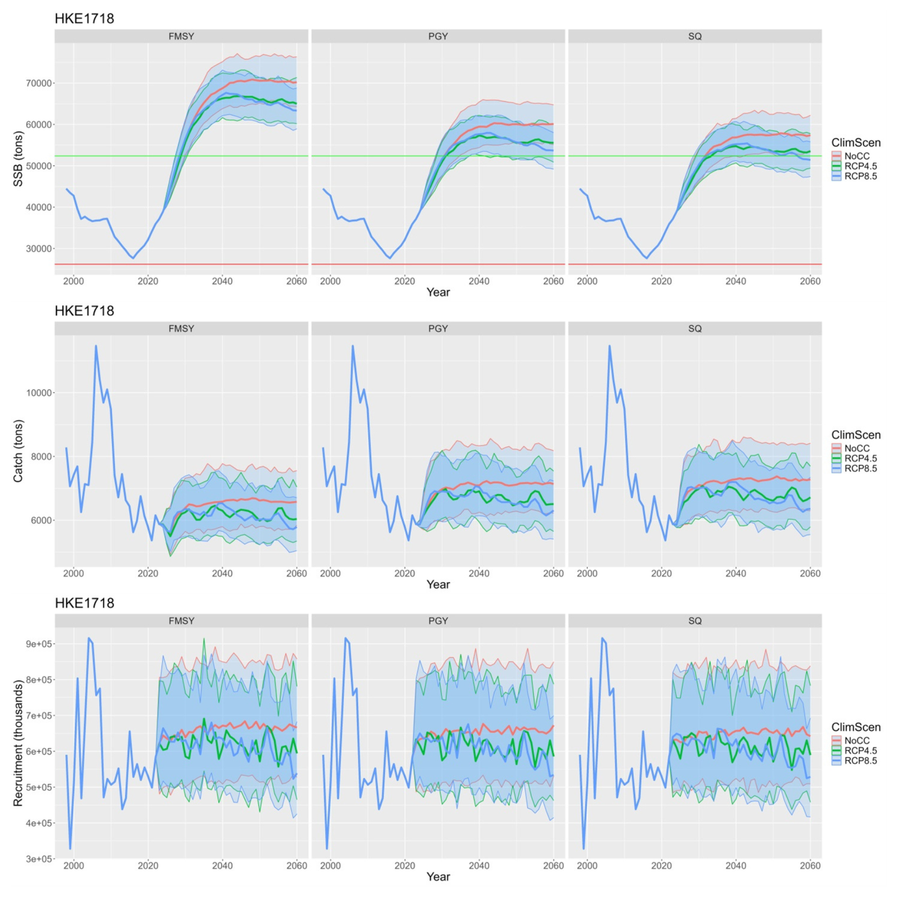
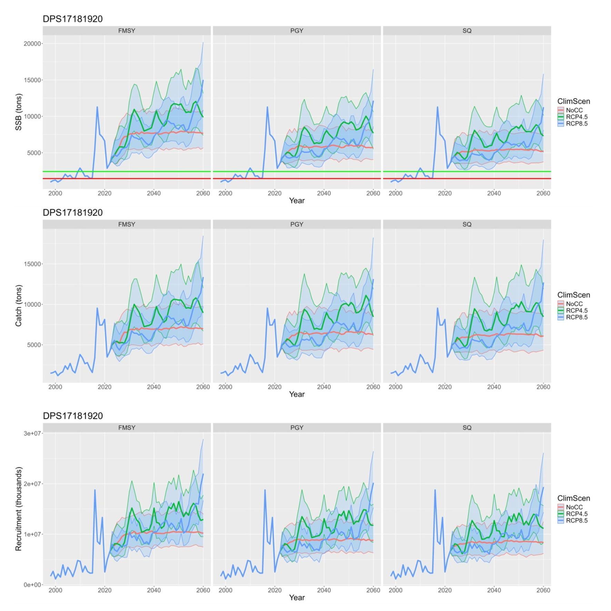

# iterators
if (!("iterators" %in% installed.packages()[,1])) {
install.packages("iterators")
}
if (!("FLCore" %in% installed.packages()[,1])) {
#install.packages("FLCore",repos="http://flrproject.org/R")
remotes::install_github("flr/FLCore")
}
if (!("ggplot2" %in% installed.packages()[,1])) {
install.packages("ggplot2")
}
if (!("gridExtra" %in% installed.packages()[,1])) {
install.packages("gridExtra")
}
if (!("akima" %in% installed.packages()[,1])) {
install.packages("akima")
}
if (!("stringr" %in% installed.packages()[,1])) {
install.packages("stringr")
}
if (!("RGtk2" %in% installed.packages()[,1])) {
install.packages("RGtk2")
}
if (!("Hmisc" %in% installed.packages()[,1])) {
install.packages("Hmisc")
}
if (!("timeDate" %in% installed.packages()[,1])) {
install.packages("timeDate")
}
if (!("reshape" %in% installed.packages()[,1])) {
install.packages("reshape")
}
if (!("scales" %in% installed.packages()[,1])) {
install.packages("scales")
}
if (!("tryCatchLog" %in% installed.packages()[,1])) {
install.packages("tryCatchLog")
}
if (!("FLasher" %in% installed.packages()[,1])) {
install.packages("FLasher",repos="http://flrproject.org/R")
}
if (!("FLBRP" %in% installed.packages()[,1])) {
# install.packages("FLBRP",repos="http://flrproject.org/R")
remotes::install_github("flr/FLBRP")
}
if (!("FLasher" %in% installed.packages()[,1])) {
# install.packages("FLBRP",repos="http://flrproject.org/R")
remotes::install_github("flr/FLasher")
}SEAwise – BEMTOOL tutorial

Introduction
BEMTOOL is an integrated bioeconomic modelling tool that follows a multi-fleet and multiple species approach, simulating the effects of management scenarios on stocks and fisheries (Rossetto et al. (2015) and Bitetto et al.(2025)). Such effects in mixed fisheries are measured by a suite of indicators with associated uncertainty. BEMTOOL was previously implemented, within FAIRSEA project (https://www.italy-croatia.eu/web/fairsea), in the Adriatic and western Ionian Seas (GFCM Geographical Sub Areas - GSAs 17, 18 and 19, Figure 1) to inform and support the modelling of indicators, targets and limits, linked to the management of key stocks: European hake (HKE), red mullet (MUT) and deep water rose shrimp (DPS).
The data required are for the most part publicly available and are mainly stock assessment results, transversal data (e.g. effort, landing), socio-economic data, other relevant information (e.g. historical management measures applied).
BEMTOOL model has been peer-reviewed in a number of contexts, through a number of applications in Mediterranean Sea under EU funded projects and STECF experts Working groups, including the Western Med MAP STECF EWGs where BEMTOOL is routinely applied since 2019. The tool was used also in the communication with relevant stakeholders in many contexts.

In SEAwise the model has been enhanced covering 24 fleet segments, that which encompass both active and passive gears targeting demersal resources, and 10 key target stocks: European hake in GSAs 17-18, European hake in GSA 19, Red mullet in GSAs 17-18, Red mullet in GSA 19, Deep-water rose shrimp in GSAs 17-18-19, Common sole in GSA 17, Norway lobster in GSA 17, Norway lobster in GSA 18, giant red shrimp in GSAs 18-19 and blue and red shrimp in GSAs 18-19. These stocks are among the main target of the fisheries and of the Multi Annual Management Plan in the Adriatic region (GFCM Recommendations GFCM/43/2019/5; GFCM/44/2021/1). In the GSA19 a MAP for demersal stocks is not yet in place. However, considering the possible connectivity of the populations in the whole area (Spedicato et al. (2022)) also HKE and MUT in GSA19 were included in this analysis.
Application of BEMTOOL in WP6
In SEAwise WP6 BEMTOOL model has been applied including enhancements made in WP2 (socio-economic impacts of and on fishing) and WP3 (Ecological effects on fisheries) and, specifically:
- enhanced fish price sub-models and variable costs (e.g fuel) disaggregated by metier (see tutorial task 2.2);
- environmentally-mediated stock recruitment relationships (EMSRR), allowing to model effects of climate change on stock productivity (see tutorial on recruitment EMSRR estimation.
The climate change has been then combined with the a number of management measures, focused on effort control measures aligned with GFCM Multiannual Plans, including status quo effort, effort reduction to reach FMSY or F0.1, and multi-species PGY strategies. Additionally, management measures such as gear selectivity improvements, spatial closures and (e.g., reallocation of effort between static and mobile gears) were explored to assess their implications on economic performance, employment, and carbon emissions.
In the BEMTOOL operating model, the population dynamic is simulated by Aladym model (Lembo et al.(2009)) for all the stocks considered without interaction among them. The model at present can be considered a short-cut of type 1, with an estimation emulator that add error to the simulated population outcomes. Different sources of uncertainty can be included a part of recruitment: on sexual maturity, growth, M (linked to the growth), fleet selectivity. The model works by sex and month and includes length information of the population. A number of management scenarios can be simulated, including gear selectivity, spatio-temporal closures, catch limits and combinations of the measures. A number of indicators are provided, in particular the model estimates biological, pressure and socio-economic indicators and provide a number of alternative economic sub-models on price and costs to estimate properly the relevant economic performance by fleet.

Required packages
In order to run BEMTOOL you should have the following packages installed:
from zip: ALADYMTools (available on WP6 github)
from Cran:gridExtra, akima, stringr, Hmisc, timeDate,reshape, scales, FLBRP
from http://flrproject.org/R: FLCore, ggplot2, FLasher
RGtk2 installation
A specific procedure has to be carried out to install RGtk2:
- Download GTK+ dependencies (gtk+-bundle_2.22.1-20101229_win64.zip file) from https://download.gnome.org/binaries/win64/gtk+/2.22/
- Unzip it to the path of your choice.
ATTENTION!!!!: Using either Windows Explorer’s built-in zip file management, or the command-line unzip.exe, available for instance at ftp://tug.ctan.org/tex-archive/tools/zip/info-zip/WIN32/unz552xN.exe unzip this bundle. Avoid Winzip! It is known to behave oddly.
Set the environment variable PATH to where GTK+ was unzipped. You could use this command from within R: Sys.setenv(PATH = “Path\to\gtk+”)
Install RGtk2 from Togaware:
install.packages(“https://access.togaware.com/RGtk2_2.20.36.2.zip”, repos=NULL) or from Github:
devtools::install_github(“cran/RGtk2”)
- Import the library:
library(RGtk2)
A dialog window may appear asking you to intall GTK+. This should install some missing parts of the GTK+ or refer RGtk2 of the GTK+ installed in step 1.
Restart R.
Import the library again
# TO DO just the FIRST time you run BEMTOOL!
#wd <- "\\gtk+-bundle_2.22.1-20101229_win64"
#setwd(wd)
# Sys.setenv(PATH = "C:\\Training\\gtk+-bundle_2.22.1-20101229_win64")
#install.packages("https://access.togaware.com/RGtk2_2.20.36.2.zip", repos=NULL)
library(RGtk2)
library(ALADYMTools)Launching the model and running the simulation part from the GUI
Pay attention to copy on C disk the folder Training as it is.
Then copy in the console the code below, updating your working directory path.
wd <- "C:\\Training\\BMT_Nov2024"
setwd(wd)
#source("BEMTOOL.r")
# activate_main_w()- When BEMTOOL GUI will appears, click on “LOAD case study definition” button and select the file “INPUT/bmtconfigSimulation.csv”;

Click on NEXT button and verify that all the data (biological, economic, etc…) are correctly read; click 3 times on NEXT and finally click on “RUN new diagnosis”;
When the ALADYM GUI appears, click on “Load simulation parameters” and select the file “INPUT/ALADYM/configuration file_ALADYM -HKE GSA 17-18.csv” and then click on RUN simulation.

In the console you can see the steps of running the reference points for stock 1; when it finishes, the ALADYM GUI for the second stock (hake 19) will appear. Redo the step 3, selecting in the following order these files:
- INPUT/ALADYM/configuration file_ALADYM -HKE GSA 19.csv;
- INPUT/ALADYM/configuration file_ALADYM -MUT GSA 17-18.csv;
- INPUT/ALADYM/configuration file_ALADYM -MUT GSA 19.csv;
- INPUT/ALADYM/configuration file_ALADYM -DPS GSA 171819.csv.
At the end of this process, the diagnosis (current situation of the stocks and fisheries) is available in the GUI for your consultation.
Key Indicators (hindcast)
Once that the diagnosis is complete, the key indicators are stored in the OUTPUT folder (automatically created):
- Biological indicators (e.g. SSB, mean age population, mean age spawners, etc…) : Training - Biological Indicators.csv;
- Economic indicators (e.g. GVA, costs, etc…): Training - Economic output.csv;
- Pressure indicators (e.g. Catch, F, etc…): Training - Pressure impact indicators.csv
library(knitr)
library(kableExtra)
df<-head(read.table("Training - Biological indicators.csv",sep=";", header=TRUE))[,-1]
kable(df, align = c("l","l")) %>%
kable_styling(full_width = FALSE, position = "center",
bootstrap_options = c("striped", "bordered", "bordered")) %>%
collapse_rows(columns = 1, valign = "top")| Scenario | ID_scenario | Fleet_segment | Stock | Year | Variable | Value | Unit | Comments |
|---|---|---|---|---|---|---|---|---|
| Diagnosis | NA | ALL | M.mer1718 | ALL | Bref | NA | BF0.1 | |
| NA | ALL | M.mer1718 | ALL | SSBref | NA | SSBF0.1 | ||
| NA | ALL | M.mer1718 | 1998 | SSB_exploited_pop | 3374.73 | tons | ||
| NA | ALL | M.mer1718 | 1998 | Total_biomass_exploited_pop | 16079.16 | tons | ||
| NA | ALL | M.mer1718 | 1998 | SSB_SSBref | NA | SSB_SSBF0.1 | ||
| NA | ALL | M.mer1718 | 1998 | SSB_unexploited_pop | 22579.15 | tons |
df<-head(read.table("Training - Economic output.csv",sep=";", header=TRUE))[,-1]
kable(df, align = c("l","l")) %>%
kable_styling(full_width = FALSE, position = "center",
bootstrap_options = c("striped", "bordered", "bordered")) %>%
collapse_rows(columns = 1, valign = "top")| Scenario | ID_scenario | Fleet_segment | Species | Year | Variable | Value | Unit | Comments |
|---|---|---|---|---|---|---|---|---|
| Diagnosis | Diagnosis-- | Fleet1 | ALL | 1998 | VESSELS.annual | 1 | number | NA |
| Diagnosis-- | Fleet1 | ALL | 1998 | GT.average.annual | 1 | GT | NA | |
| Diagnosis-- | Fleet1 | ALL | 1998 | GT.annual | 1 | GT | NA | |
| Diagnosis-- | Fleet1 | ALL | 1998 | KW.average.annual | 1 | KW | NA | |
| Diagnosis-- | Fleet1 | ALL | 1998 | KW.annual | 1 | KW | NA | |
| Diagnosis-- | Fleet1 | ALL | 1998 | DAYS.average.annual | 12 | days | NA |
df<-head(read.table("Training - Biological indicators.csv",sep=";", header=TRUE))[,-1]
kable(df, align = c("l","l")) %>%
kable_styling(full_width = FALSE, position = "center",
bootstrap_options = c("striped", "bordered", "bordered")) %>%
collapse_rows(columns = 1, valign = "top")| Scenario | ID_scenario | Fleet_segment | Stock | Year | Variable | Value | Unit | Comments |
|---|---|---|---|---|---|---|---|---|
| Diagnosis | NA | ALL | M.mer1718 | ALL | Bref | NA | BF0.1 | |
| NA | ALL | M.mer1718 | ALL | SSBref | NA | SSBF0.1 | ||
| NA | ALL | M.mer1718 | 1998 | SSB_exploited_pop | 3374.73 | tons | ||
| NA | ALL | M.mer1718 | 1998 | Total_biomass_exploited_pop | 16079.16 | tons | ||
| NA | ALL | M.mer1718 | 1998 | SSB_SSBref | NA | SSB_SSBF0.1 | ||
| NA | ALL | M.mer1718 | 1998 | SSB_unexploited_pop | 22579.15 | tons |
Comparison with the stock assessment results
BEMTOOL utilises the main stock assessment input and results to replicate the stocks by month.
To create a BEMTOOL application from scratch refer to the script available at: https://github.com/Isabella84/BEMTOOL2.5/tree/master (script for BEMTOOL parameterization).
The first step for completing the conditioning of the model is to compare the stock assessment results, in terms of SSB, F and catch, with the same indicators derived from the stocks replicated by BEMTOOL using the stock assessment results.
Some examples of comparison follow:

Figure 2 - Example of stock replicated from SPiCT stock assessment results

Figure 3 - Example of stock replicated from SS3 stock assessment results
Running forecast
Once that the diagnosis was loaded, click on “Load scenario configuration” and select the file bmtconfigForecast.csv. It is set a SQ scenario.
To parameterize all the economic functions in the projections, refer to the BEMTOOL manual. Consider that the for parameterizing the fish price functions and the variable costs, a dedicated tutorial was developed SEAwise – Fish price & Variable costs.
Several management strategies can be simulated in BEMTOOL, also in combination with the impact of climate change on recruitment:
- Change in Selectivity: after selecting Change in selectivity scenario (or combining change in selectivity with other scenarios) from the GUI or from the bmfconfig csv file, we could change the selectivity in the ALADYM GUI, each time that a species GUI will open. An example of selectivity file is provided in the github Med case study repository, under BEMTOOL directory. See also chapter 12.1 of the manual for further details.

- Change in effort: the change in effort has to be parameterized providing in the BEMTOOL GUI the cvs file for the number of vessels and the number of fishing days by month and year. The GT and KW for the fleets are assumed the same of the last year of simulation. An example of fishing day and vessel file is provided in the github Med case study repository, under BEMTOOL directory. The change in effort can be also parameterised using the GUI (see chapter 12.2), through a smart facility.

How to integrate climate change through EMSRR
To integrate the environmental variables, and then the climate, on the stock recruitment relationships and in the projections, SEAwise BEMTOOL model built on the work made in WP3, described in Bitetto et al.(2025).
Before clicking on Run NEW scenario, select the grid for environmental projections for the years of simulations (in our case until 2040) from the GUI. Open the script “runCI.r” in the folder (lines 628-650):
#"C:\Training\BMT_Nov2024\src\biol\bmtALADYM\ALADYM-ver12.3-2017_0501\src" This modification of the files will change according to the climate change scenario.Below an example without clmate change:
# DO IT in the script, here it is reported only an example!
#Folder: "C:\Training\BMT_Nov2024\src\biol\bmtALADYM\ALADYM-ver12.3-2017_0501\src"
BMT_SPECIES= c("M.mer1718" , "M.mer19" , "M.bar1718" ,"M.bar19" , "P.lon171819")
ALADYM_spe=1
if(BMT_SPECIES[ALADYM_spe]=="M.mer1718" ){
ENV<<-read.table("C:\\Training\\INPUT\\ENVIRONMENTAL_GRIDS\\HKE1718_50_500_NoCC_bia_adj_month.csv",sep=";",header=T)
} else if (BMT_SPECIES[ALADYM_spe]=="M.mer19" ){
ENV<<-read.table("C:\\Training\\INPUT\\ENVIRONMENTAL_GRIDS\\HKE19_50_500_NoCC_bia_adj_month_2.csv",sep=";",header=T)
} else if (BMT_SPECIES[ALADYM_spe]=="M.bar1718" ){
ENV<<-read.table("C:\\Training\\INPUT\\ENVIRONMENTAL_GRIDS\\MUT1718_10-200_NoCC_bia_adj_month.csv",sep=";",header=T)
} else if (BMT_SPECIES[ALADYM_spe]=="M.bar19" ){
ENV<<-read.table("C:\\Training\\INPUT\\ENVIRONMENTAL_GRIDS\\MUT19_10_200_NoCC_bia_adj_month.csv",sep=";",header=T)
} else if (BMT_SPECIES[ALADYM_spe]=="P.lon171819" ){
ENV<<-read.table("C:\\Training\\INPUT\\ENVIRONMENTAL_GRIDS\\DPS17181920_50_500_NoCC_bia_adj_month.csv",sep=";",header=T)
}
head(ENV)This table could potentially contain different values for each month in the year.
Modify RFSS script with the coefficients of the EMSRR
In the function containing the equations of the SRR, we included all the coefficients by stock except a and b (that are in the grid defined above).
For the estimation of the EMSRR coefficients on your own data, refer to the WP3 tutorial.
Folder: path reported in the code below.
These coefficients will not change with the climate change scenario.
# DO IT in the script!! Here there is only an example!
# Folder: "C:\Training\BMT_Nov2024\src\biol\bmtALADYM\ALADYM-ver12.3-2017_0501\src"
if(BMT_SPECIES[ALADYM_spe]=="M.mer1718" ){
para_RLc=0.123 # HKE 1718
para_RLd=0 # HKE 1718
} else if (BMT_SPECIES[ALADYM_spe]=="M.mer19"){
para_RLc=0.244 # HKE19
para_RLd= 0 # HKE19
} else if (BMT_SPECIES[ALADYM_spe]=="M.bar1718"){
para_RLc=0.395 # mut1718
para_RLd= 0.014 # mut1718
} else if (BMT_SPECIES[ALADYM_spe]=="M.bar19"){
para_RLc=0.546 # mut19
para_RLd= 0 # mut19
} else if (BMT_SPECIES[ALADYM_spe]=="P.lon171819"){
para_RLc=0 # dps
para_RLd= -0.424 # dps
} Running the climate change scenarios
Come back to the BEMTOOL GUI and, clicking on “Load scenario configuration” button, you can select the file “INPUT/bmtconfigForecast.csv”.
In the GUI can verify if the input data are correctly read, and you can modify the name of the scenario according to the setting defined in the chunk “modify the RCP scenario”.
In the OUTPUT folder you will find all your saved results, in tables (.csv) and plots.

Examples of comparison among scenarios follow:

Figure 4 - Example of comparison for European hake in Adriatic and western Ionian Sea comparing dfferent climate scenarios under Fmsy management.

Figure 5 - Example of comparison for Deep-water rose shrimp in Adriatic and Ionian Sea comparing dfferent climate scenarios under Fmsy management.